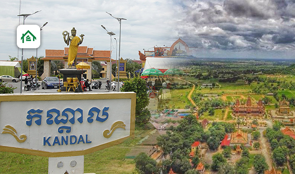

Kandal (Khmer: កណ្ដាល, Kândal [kɑnˈɗaːl]; lit. 'Middle') is a province of Cambodia located in the southeast portion of the country. It completely surrounds the Cambodian capital of Phnom Penh and borders the provinces of Kampong Speu and Takéo to the west, Kampong Chhnang and Kampong Cham to the north, Prey Veng to the east, and shares an international border with Vietnam (An Giang and Đồng Tháp) to the south. It is the second most populous province in Cambodia after the capital Phnom Penh.[3] Its capital and largest city is Ta Khmau, which is approximately eight kilometres (5.0 mi) south of central Phnom Penh. Kandal is one of the wealthier provinces in the country. Kandal province serves as an economic belt of the capital Phnom Penh. Farming and fishing are the two main industries of the province. Major products include palm oil, peanuts, rice, and pepper. In addition to farming and fishing, the province also supports thriving cottage industries that specialize in wood carving, silk, and handicrafts. Many garment factories are located in Kandal province, which hires more than 500,000 workers.
